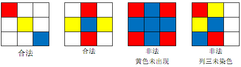

棋盘是一个 $n×m$ 的矩形，分成 $n$ 行 $m$ 列共 $n \times m$ 个小方格。
现在萌萌和南南有 $C$ 种不同颜色的颜料，他们希望把棋盘用这些颜料染色，并满足以下规定：
棋盘的每一个小方格既可以染色（染成 $C$ 种颜色中的一种），也可以不染色。
棋盘的每一行至少有一个小方格被染色。
棋盘的每一列至少有一个小方格被染色。
种颜色都在棋盘上出现至少一次。
以下是一些将 $3×3$ 棋盘染成 $C=3$ 种颜色（红、黄、蓝）的例子：

请你求出满足要求的不同的染色方案总数。只要存在一个位置的颜色不同，即认为两个染色方案是不同的。
输入只有一行 $3$ 个整数 $n,m,c$。
$1 \le n,m,c \le 400$
输出一个整数，为不同染色方案总数。
因为总数可能很大，只需输出总数 $\bmod 1,000,000,007$ 的值。
2 2 3
60
 Comet OJ
Comet OJ